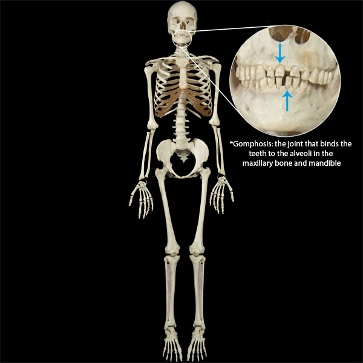

Gomphosis Joints
Gomphosis joints are joints in which a peg in one bone connects to a socket in another bone. The only example of gomphoses in the human body are the joints between the teeth and sockets within the mandible and maxilla. In this case, ligaments known as periodontal ligaments connect the teeth to the bony sockets.
